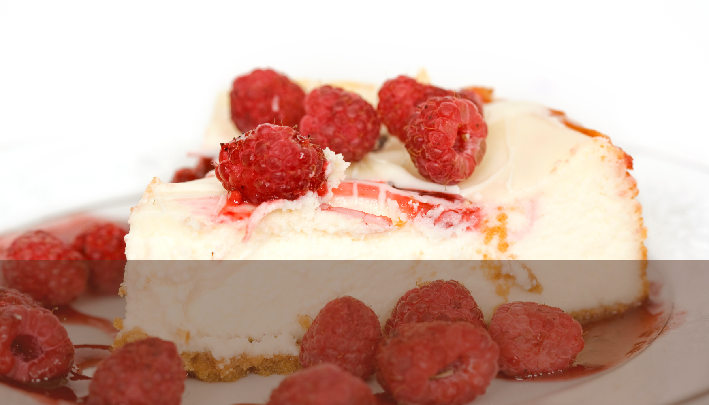

Start your day with the buttery, flaky layers of our homemade croissants. Baked fresh every morning, these golden pastries
are a testament to our dedication to traditional techniques, bringing a touch of Parisian magic to your breakfast table or
as a delightful snack any time of day. Pair them with your favorite coffee or tea for a truly delightful experience.


Croissant
Danish Pastry
Delight in the sweet, tender layers of our homemade Danish pastries. Filled with creamy custard and topped with a drizzle
of icing, each pastry is made with love and care, offering a perfect blend of textures and flavors that make breakfast or
dessert feel extra special. Enjoy one as a morning treat or a sweet afternoon pick-me-up.

Cheesecake
Treat yourself to a slice of our beloved homemade cheesecake, lovingly crafted in our bakery. Each bite offers a dreamy,
melt-in-your-mouth experience with a perfect balance of rich, creamy filling and a crumbly graham cracker crust. Made with
the finest ingredients, our cheesecake is a heavenly delight that brings comfort and joy to any occasion. You’ll taste the
love and tradition in every forkful.